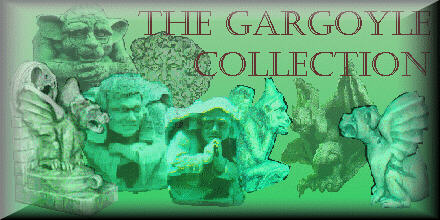

Middle Age Arts
About Gargoyles
Gargoyles Products (text version)
Others Collections

From the President

This month Middle Age Arts introduces the Gargoyle Collection. I'm really excited about this new set of classical figures.
The collection contains faithful reproductions of gargoyles from some of the famous cathedrals of Europe, including Notre Dame, Rheims and Warwick Castle. All reproductions are done to exacting and loving detail.
The collection also contains original works by noted artists such as Susan Bedford and Antonio Salvari. Our expert artisans have produced some wonderful and whimsical works, perfectly suited for home or garden use.
Don't delay, order your gargoyle today.
What can you do with a gargoyle?
Don't think you need a gargoyle? Think again. Gargoyles are useful as:
- Bird baths
- Bookends
- Paperweights
- Pen holders
- Wind chimes
Go to our catalog for more ideas!
Profile of the Artist

This month's artist is Michael Cassini. Michael has been a professional sculptor for ten years. He has won numerous awards, including the prestigious Reichsman Cup and an Award of Merit at the 1997 Tuscany Arts Competition.
Michael specializes in recreations of gargoyles from European cathedrals. You'll usually find Michael staring intently at the church walls in northern France. His work is represented by the Turin Gargoyle, a great entry to our Gargoyle Collection.